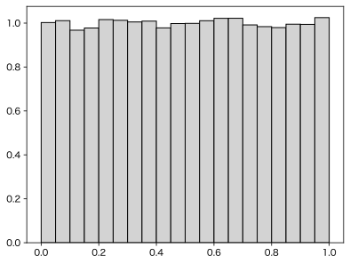
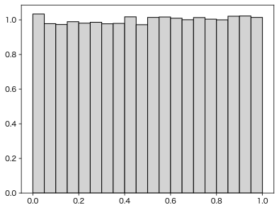
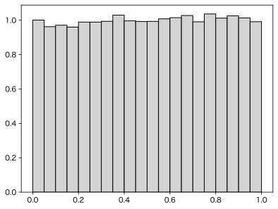
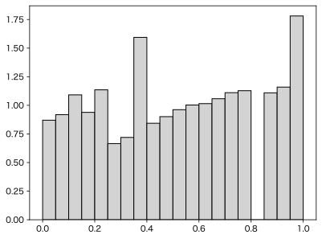
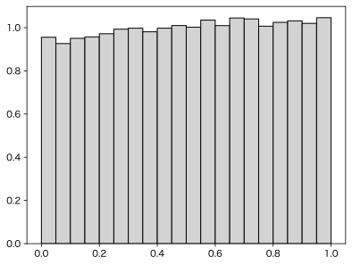
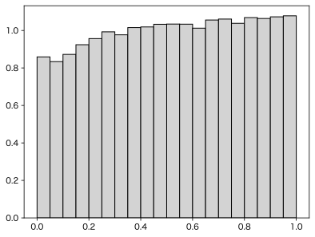

$t$ 検定とMann-Whitneyの $U$ 検定
「$t$ 検定はデータが正規分布をしていないと使えない。正規分布でない場合はMann-Whitneyの $U$ 検定（Wilcoxon-Mann-Whitney検定、Wilcoxonの順位和検定ともいう）を使え」とよく言われてきました。
われわれが観測するデータは、詳しく見れば多少なりとも正規分布から外れているはずなので、それなら $t$ 検定を捨ててこっちを使えばいいのでしょうか？
でもAndrew Gelman御大は Don't do the Wilcoxon なんてことを言っておられます。本当にややこしい。
そもそも $t$ 検定が何を検定するかというと、データの平均値の差です。データがほとんどどんな分布をしていようと、データの平均値はほぼ正規分布になる（データの個数が増えると正規分布に近づく）という「中心極限定理」があるので、正規分布に基づく検定で大丈夫だ、というのが、ここで言いたいことです。もっと安心して $t$ 検定を使いましょう。
それに、最近は「有意か、有意でないか」の2分割は批判されていて、平均値の差であれば具体的にどれくらい差があるかを信頼区間として示すことが求められるようになってきました。「薬Xは収縮期血圧を有意に下げた（p < 0.05）」というより「薬Xは収縮期血圧を10mmHg下げた（95%信頼区間 [5, 15]）」というほうが情報量がありますよね。一方、Wilcoxonのほうは、順位だけに基づくので、例えば2組のデータ $\{1,2,3,4\}$、$\{5,6,7,8\}$ の違いの $p$ 値と、2組のデータ $\{1,2,3,4\}$、$\{105,106,107,108\}$ の違いの $p$ 値とは、まったく同じです。
「安心して $t$ 検定を」といっても、どれくらい安心できるのか、具体的にわかったほうがいいので、ちょっとシミュレーションをしてみましょう。ある検定法で求めた $p$ 値がどれくらい妥当かを示す簡単な方法として、帰無仮説に従うサンプルをたくさん生成して検定して $p$ 値を求め、それが0から1までの区間で一様分布になっているかを調べる方法があります。一様分布なら例えば $p < 0.05$ になる確率がちょうど 0.05 ですので、$p$ 値の性質を満たしています。
まずはデータが正規分布に従う場合を考えましょう。標準正規分布（平均 0、分散 1 の正規分布）から $M = 10$ 個ずつ取った2つのサンプルを生成し、分散が等しいと仮定した $t$ 検定をして $p$ 値を求め、$p$ 値のヒストグラムを描きます。
import numpy as np
import matplotlib.pyplot as plt
from scipy import stats
rng = np.random.default_rng()
M = 10
N = 100000
def p_value():
data1 = rng.standard_normal(M)
data2 = rng.standard_normal(M)
_, p = stats.ttest_ind(data1, data2, equal_var=True)
return p
p_values = [p_value() for _ in range(N)]
plt.hist(p_values, color="lightgray", edgecolor="black",
bins=np.arange(21)/20, density=True)

理屈どおり、一様分布になっています。
ではデータが正規分布でない場合はどうでしょうか。ここではデータが一様分布だとしてみます。上のコードの2箇所の rng.standard_normal(M) を rng.random(M) に変えるだけです。

ほぼ一様分布ですね。
現実のデータの検定では equal_var=True でなく equal_var=False とするほう（分散が等しいと仮定しない $t$ 検定、Welch検定）が、適用範囲が広がるので推奨されています。こちらをやってみましょう。

こちらもほぼ一様分布ですね。
なお、分散が等しいかどうかを $F$ 検定で調べて、等しければ分散が等しいと仮定する $t$ 検定、そうでなければ分散が等しいと仮定しない $t$ 検定を使いましょうと言われたこともありましたが、これは間違いです。分散が等しいかどうかわからない場合は、最初から分散が等しいと仮定しない $t$ 検定を使いましょう。詳しくはt検定の下の方にあるシミュレーション結果をご参照ください。
ここでMann-Whitneyの $U$ 検定（厳密版）にしてみましょう。stats.ttest_ind(data1, data2, equal_var=...) を stats.mannwhitneyu(data1, data2, method="exact") に変えるだけです。

ガタガタの分布になってしまいました。厳密版を近似版（method="asymptotic"）にしてもほぼ同じです。順位を使うので離散分布になってヒストグラムの階級の取り方によってガタガタになってしまうのですが、慣らして考えても一様分布からの外れが見えます。
以上はすべて $M = 10$ の場合でした。もっとサンプルサイズを小さくしたら、中心極限定理からの外れが大きくなって、誤差が出てくるはずです。やってみましょう。まず $M = 5$ です。少し一様分布からの系統的な外れが見えてきますが、それでも上のMann-Whitneyよりずっとマシです。

$M = 3$ です。

外れがだんだん目立ってきます。やはり $M = 5$ 以上、できれば $M = 10$ 以上は欲しいところです。それより小さいサンプルの場合は、そもそも機械的に検定をするような状況でない場合が多いと思いますので、個々のデータ点をプロットするなりして、総合的に判断しましょう。
結論として、Wilcoxon-Mann-Whitneyはあまりお薦めできないので、分散が等しいと仮定しない $t$ 検定（Welch検定）を使いましょう。そして、有意か有意でないかの2分割ではなく、具体的な $p$ 値を報告するか、さらに推奨される方法としては、どれくらい差があるかの具体的な値とその信頼区間を書くのがよいでしょう。